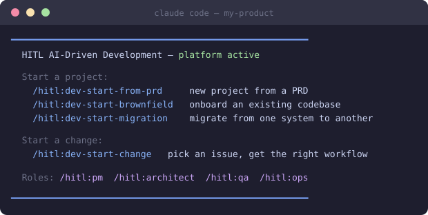
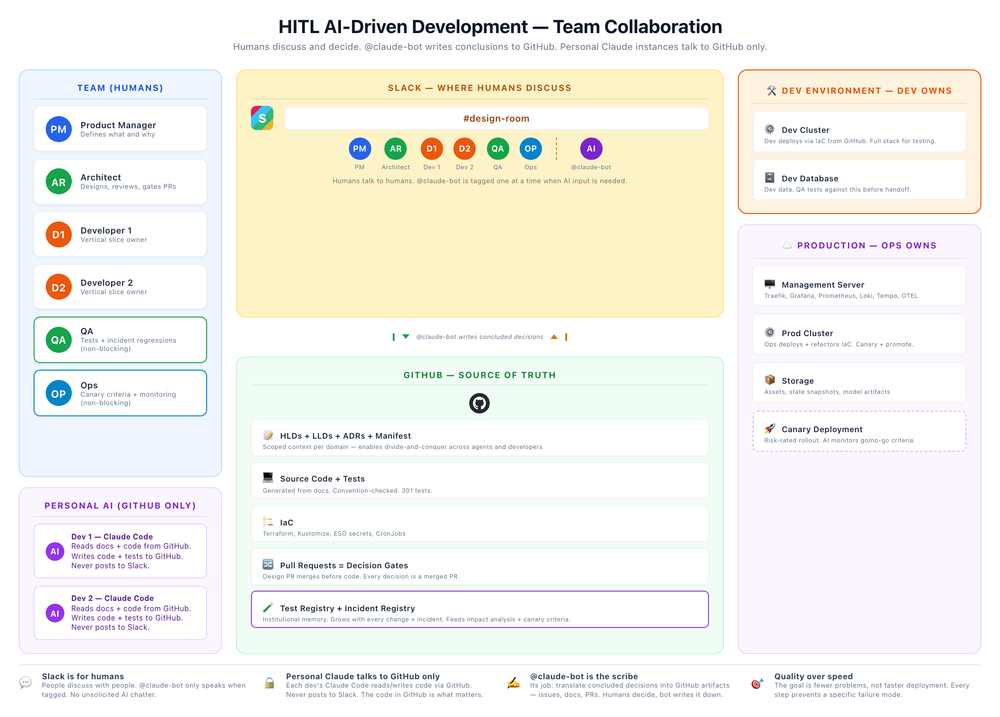
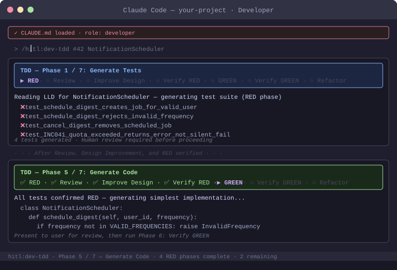
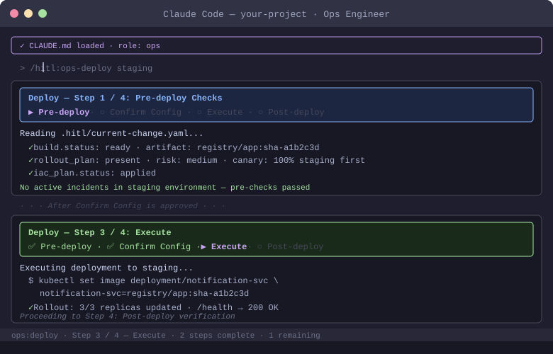

AI generates. Humans shape, review, and decide.
AI writes code faster than teams can review it, and it writes confidently even when it is wrong. HITL makes that speed safe: documentation becomes the shared source of truth, every step leaves evidence, and repo-local enforcement hooks fail closed — a skipped step surfaces instead of slipping through. This page shows everything that happens between "we have an existing codebase" and "our team ships AI-built enhancements to customers".
click any step to see what happens inside it — and who does what
Two commands — claude plugin marketplace add pappar/hitl-claude-plugin, then claude plugin install hitl@hitl — install the HITL plugin into Claude Code from a public marketplace: 50 skills, 6 reviewer agents, enforcement hooks, and document templates. At this point it is inert. Nothing reads or changes your repository until you start onboarding.
/hitl:* command set inside Claude CodeStep 0 of onboarding writes 8 small hook scripts into your repo and registers them with Claude Code. From now on, every session starts with a gate: no edits happen without an active, tracked change; every step you take shows up in a breadcrumb trail; session summaries are written automatically. This is what separates a governed AI process from a set of good intentions.
.hitl/hooks/ · .claude/settings.json · ADR stubs
Eleven tracked steps. The goal is not paperwork; it is building the shared memory that every future AI session will load, so the hundredth change is as grounded as the first.
The AI reads your directory tree and proposes what it sees: source roots, the technology stack, test locations, build tooling. You correct it. Everything downstream is anchored to this confirmed picture instead of assumptions.
The AI drafts your coding conventions by reading your existing code: naming, error handling, test style, forbidden patterns. You edit until it says what you actually want. This file loads into every future session without anyone remembering to paste it, so the AI stops reinventing style per session.
CLAUDE.md — the always-loaded team contractA generator scans the real code and produces the system manifest: which domains exist, which files belong to each, where the boundaries are, which APIs cross them. Later, when the AI works on a change, hooks check its edits against this map — a change scoped to one domain cannot quietly leak into another.
docs/system-manifest.yamlThe AI reads the codebase and identifies the decisions someone once made: service architecture, data storage, auth, API style, deployment shape. Then it interviews your architect: was this deliberate or inherited? What constraints held? What would you change? Real answers become Architecture Decision Records; the AI never invents a rationale nobody gave. It closes with a triaged concern list: what blocks the process, what to fix in early changes, what is just worth knowing.
The AI finds your CI configuration, runs the build, and checks whether a staging deploy exists and runs from CI rather than someone's laptop. The verdicts are not just discussed; they are written into the platform readiness register, the file that later gates production deploys. If there is no pipeline at all, the AI offers to scaffold a starter one for your hosting target.
platform-readiness.yamlDashboards, alerting, on-call routing: the AI surveys what exists and records an honest verdict in the readiness register. It also sets up something new: agentic observability. A token cost registry tracks what each AI-assisted change costs, so the investment in AI development is measured, not guessed.
You name up to three components that are most critical and most likely to change. The AI generates high-level and low-level design docs for those, and you correct them. Everything else gets documented the first time it is touched, so the documentation debt pays itself down through real work instead of a big-bang effort nobody finishes.
Two registries get seeded. The test registry: the AI scans your test files and records what covers what. The incident registry: you recount what broke in production in the last six months, and each incident becomes a record. Future changes query these automatically — a change touching a domain with past incidents gets stricter canary criteria, because the process remembers even when people rotate.
test-registry.yaml · incident-registry.yamlGraphify builds a queryable graph over your code and docs, so skills can look up context precisely instead of reading whole documents. Everything works without it; on large repos it makes the AI faster and cheaper. It rebuilds automatically on every commit once installed.
graphify-out/graph.jsonOne GitHub issue is one delivery slice, from day one. The issue is the seed of the traceability chain: requirement to design to code to tests to deploy, all linked back to it.
The baseline exists: manifest, decision records, priority docs, registries, and a readiness register with honest verdicts in it. The handoff is candid: the new docs are drafts until real use corrects them, so early changes get extra review scrutiny. From here the journey forks into two parallel lanes.
Changes can be made the moment onboarding ends. They can be delivered to customers only when the platform readiness register is green. The two lanes run side by side, so nobody waits.

open immediately
A rough idea becomes a structured requirement with user stories, acceptance criteria, and scope boundaries — with the AI drafting and the product owner deciding. Output: a GitHub issue the workflow can act on.
The AI reads the issue, classifies which workflow applies, shows the full step plan up front, creates the branch, and seeds the tracked change file. From this moment the enforcement hooks know a change is active; before it, they block edits entirely.
The 31-step loop below: design first, tests before code, layered review, evidence at every gate. This is where the enhancement actually gets built. The full ceremony is for Tier 3 — cross-domain, high-consequence changes. Lower tiers run an abbreviated path: a typo is minutes with a standard PR review, a bug fix is under an hour of process. 31 steps is the map, not 31 meetings.
If a change touches a component that has no design doc yet, the doc is generated and reviewed first, then work resumes. This friction is by design and fades: each component pays its documentation cost exactly once.
replaces the hand-written "engineering foundations" epic
The readiness register is built from what onboarding actually found: nine pillars across verification (test suites, end-to-end tests, traceability), delivery (reproducible build, deploy playbook, deploy-from-CI), and operation (observability, a rehearsed progressive release, security posture). What already works is marked verified, with evidence named.
Every remaining gap becomes a GitHub issue with acceptance criteria. This is the roadmap teams used to write by hand after onboarding; now it is derived from recorded verdicts, so nothing gets forgotten between "we onboarded" and "we can ship".
Each roadmap issue runs through Lane A's delivery loop like any other change. Platform work is not special; it gets the same design, tests, and review as product work.
Four pillars checked with evidence stated out loud: docs reviewed and stable, tests including end-to-end passing, observability verified, CI/CD stable with one exercised progressive release. Only then does the register flip to delivery-ready, and only through this check — never by hand.
delivery_ready: true, every Tier 2+ production deploy — normal features and up; trivial fixes and Tier 0–1 changes pass — is blocked by a script that fails closed: a register it cannot read, a truncated file, an incomplete waiver all block. The gate is a pre-flight of /hitl:ops-deploy, so it governs deploys made through HITL; it does not reach into pipelines you run outside it. Urgent work ships through recorded waivers with an owner, a revisit date, and a reason. Staging is never blocked; the readiness lane needs it. One line of status shows the open-gap count until the day it disappears for good.Every enhancement is one issue through the same governed loop. Click each phase to see the work inside it.
The AI analyzes the change's impact against the manifest: which domains, which files, what risk tier. Design docs are updated before any code exists. QA plans the test cases. The architect assembles a decision packet — the complete, reviewable description of what will be built — and a human technical advisor approves it at a hard gate. AI proposes; the design that gets built is one humans signed.
The AI writes the tests first, from the design — and QA reviews those tests before a line of implementation exists. Then the AI writes code until the tests pass, refactors, and runs the convention checks. Because the tests came from the design rather than from the code, they are an independent contract: AI output that merely looks right does not pass them.

The code is reviewed against the approved design (did it build what was agreed?), then for security. The architect reviews the pull request. Docs are reconciled against what was actually built — drift is fixed in one direction or the other, never silently accepted. Finally QA verifies the running build against the acceptance criteria, independently of the people who built it.
An impact brief tells the rest of the team, in product language, what changed. A rollout plan is written with canary percentages and go/no-go numbers drawn from the incident registry — domains that broke before get tighter criteria. The technical advisor approves before anything ships.
The build is verified against CI, the platform readiness gate runs, and the deploy follows the approved plan — canary first where the risk rating calls for it. The AI reads the dashboards against the go/no-go criteria and recommends promote or hold; a human makes the call. After full traffic, a monitored soak, and later, 30- and 90-day checks on whether the change earned its cost.

Your Terraform, Kubernetes, GitHub Actions, or Jenkins stay exactly as they are. HITL verifies your existing pipeline works (and records the verdict), states outcome requirements that any tooling can satisfy — reproducible build, a deploy playbook, staging deploys that run from CI — and adds its governance checks alongside your existing workflows, not instead of them. When a change touches infrastructure, the AI wraps your tool with a dry-run, a human approval of every add, update, and delete, and a post-apply verification. HITL only scaffolds a new pipeline if you have none at all, and even then only if you say yes.
Changes can be made the moment the eleven onboarding steps finish, typically one to two weeks in. The platform readiness work runs in a parallel lane, and its items are ordinary changes your team ships like any other. The only thing that waits for readiness is significant production deploys — staging is never blocked, precisely so the readiness work itself can proceed.
Every requirement has one escape hatch: an accepted gap with a named owner, a revisit date, a risk ceiling, and a reason. The gate honors it; the status line shows it; the revisit date makes it temporary by default. What does not exist is a way to skip a requirement quietly — a lapsed waiver counts as an open gap again.
Designs are approved by your architect and technical advisor before code exists. Tests are reviewed by QA before implementation starts. Deploy commands are shown to the operator before they run, and every promote, hold, and rollback is a human call. Underneath the process sit repo-local hooks that run outside the AI's control — a human administrator can change or remove them, but the AI working in a session cannot: no edits without an active tracked change, and a production gate that fails closed on anything it cannot verify.
Honest answer: review, evidence, and gates take time the raw AI output would not. The spend is proportionate — changes carry a risk tier, and the heaviest ceremony (release review, canary, the production gate) applies to the changes that can actually hurt customers. What you buy is the thing most AI adoptions lose: a codebase that stays coherent at change one hundred, and a provable answer to "was this reviewed?" For teams shipping to real customers, that trade is the difference between AI as a demo and AI as an engineering practice.
Most teams that adopt AI development discover the same three failures: AI produces code faster than humans can review it, each session reinvents conventions the last one already learned, and nobody can prove afterwards what was reviewed. Speed goes up; trust and coherence go down.
Everything on this page is aimed at those three failures. The onboarding phase builds a durable, shared memory so no session starts from zero. The gates make review structural instead of heroic. The registers and evidence trail mean "was this reviewed?" has a checkable answer, not a shrug.
The trade is explicit: some raw velocity is spent buying coherence, trust, and proof. For teams shipping to real customers, that is the difference between AI as a demo and AI as an engineering practice.